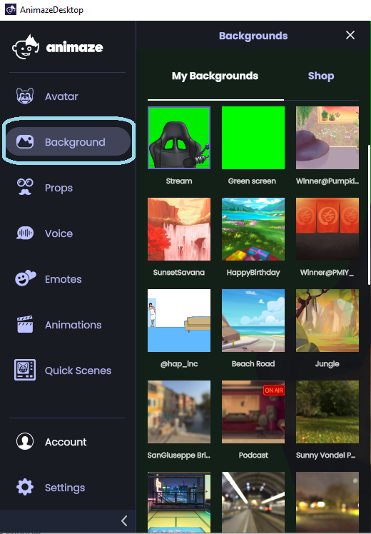
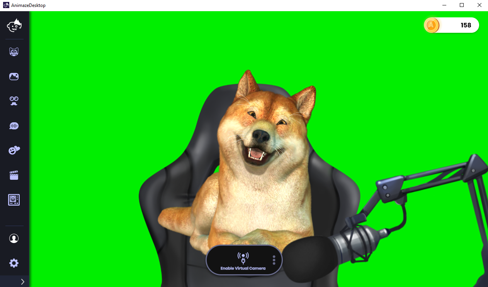
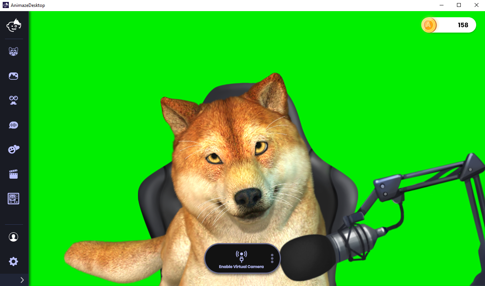
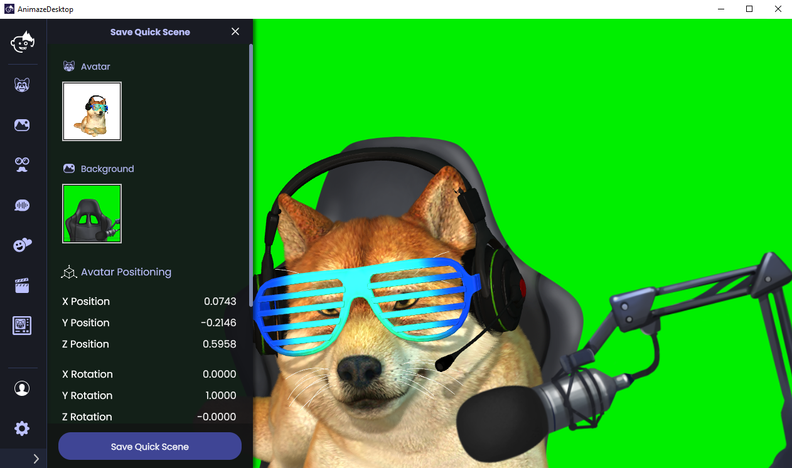
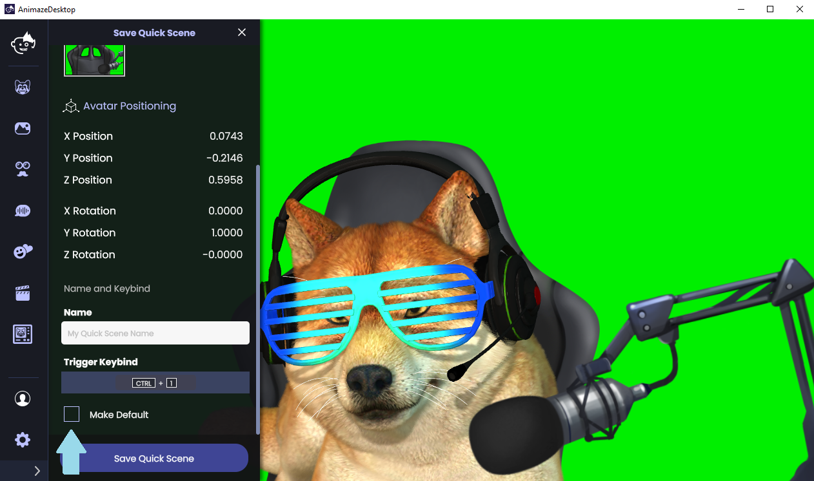

Animaze Desktop: How can I use Quick Scenes?
With Quick Scenes, quickly access your scene set-ups via a button press. To save time, use Quick Scenes when switching between various customized set-ups for your main avatar, or even as “camera cuts” to act out conversations between two or more of your characters.
Note: Do not mix up Quick Scenes (from the Animaze app) with Scenes from the Animaze Editor (they are different concepts).
Follow the steps below to create a Quick Scene:
Pick your Background.


Position your avatar. For example, we’ll increase Doge’s size and sit him comfortably in his streaming chair.

Add Props/Customize
When ready, press Ctrl+Shift+1 on the Keyboard to envoke the Quick Scene Save interface to save to Quick-Slot Number ”1”. Any number from 1 to 5 will work. Alternatively, in the the left-hand menu, click on the Quick Scenes icon and then the save slot button.

In the Quick Scene save interface, you will see a summary of your Quick Scene.
Note: Depending on your Animaze main window size, you may have to scroll down a bit to see the text input field for the Quick Scene name. It is not always visible by default. Naming your Quick Scene is mandatory to save.
Tick the “Make Default “ check-box if you want Animaze to always load that Quick Scene every time you start the Animaze app.
Naturally, you may only have one “Default” quick scene at a given time.

After saving a Quick Scene, use Ctrl + corresponding number (1 to 5) to quick-load it.
You can have multiple such Quick Scenes readily mapped on hotkeys (Ctrl+1 to Ctrl+5). Switch between the Quick Scenes without a loading screen. Performance Warning: Quick Scenes saved can cause Animaze to use more RAM.
If you have used FaceRig in the past, this feature is similar to the old FaceRig QuickSlots.